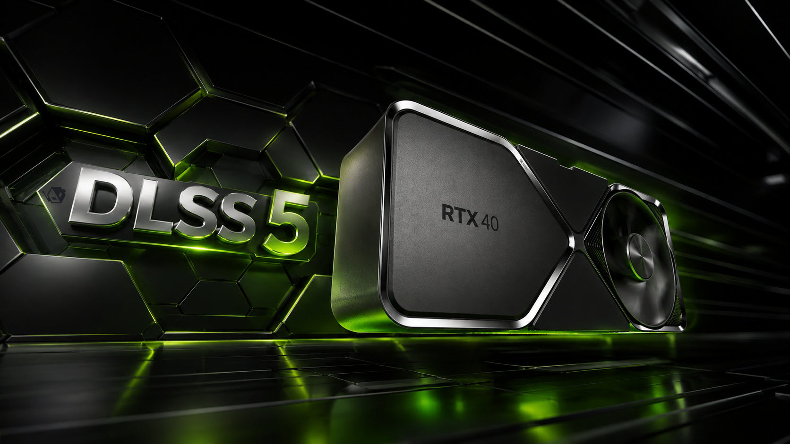

Breaking News
 September 4
September 4
by Casey Quinn
Nvidia confirms DLSS 5 support is coming to RTX 40 series graphics cards after launching on RTX 50 GPUs, expanding its AI-powered rendering technology.
Nvidia has confirmed that its upcoming next-gen DLSS 5 neural rendering tech will eventually be compatible with GeForce RTX 40 series GPUs, so availability is not exclusive to the newer RTX 50 lineup. The feature first rolled out on RTX 50 GPUs, but has now been confirmed to be coming to last-gen Ada Lovelace graphics cards once some more optimization work is done. DLSS 5 is a massive leap for Nvidia's AI-based graphics technology, going way beyond standard upscaling and frame generation Supported games will utilize the system’s neural rendering to improve lighting, materials, and overall visual realism. Nvidia says DLSS 5 is a step toward more realistic real-time graphics, with AI models used to enhance the rendered scene. There is no timeline given by the company for adding support for the RTX 40 series. Nvidia said DLSS 5 will first be optimized for the RTX 50 hardware, then rolled out to other hardware. The first official platform for the technology is still RTX 50 GPUs with RTX 40 support in a later update. This is a big deal for RTX 40 owners who were worried that DLSS 5 would be limited to Blackwell. Nvidia's move could extend the life of current high-end graphics cards, allowing more gamers to experience state-of-the-art AI rendering features without an immediate hardware upgrade. But the final result will depend on how well it is optimized, game support and how Nvidia implements DLSS 5 features on older architectures.
Even before the official announcement of RTX 40 support from Nvidia, the gaming community was already testing unofficial DLSS 5 implementations. DLSS 5 files have leaked and modders have managed to get NVIDIA’s DLSS 5 working on RTX 40 series GPUs, even on those built on the company’s Ada Lovelace architecture. One of the more famous examples was the tweaks that allowed the use of DLSS 5 features in games such as Cyberpunk 2077. Although Nvidia intended it to be compatible only with RTX 50, community developers have patched leaked software components to work with RTX 40 hardware. The experiments show that the RTX 40 GPUs have the technical capability to support some aspects of DLSS 5. Unofficial modifications can not give you the same stability, efficiency and image quality as the official implementation from the hands of nVidia. It appears that the official support strategy from Nvidia is around optimization, not just enabling compatibility. The company was quick to point out that DLSS 5 needs tuning to get reliable results, especially given how the technology is dependent on AI processing and advanced rendering techniques. But the modding community also weighed in on the hardware limitations and it seems older GPUs might not be as limited as first thought. And it pushed Nvidia to get DLSS 5 out to more than just its latest generation of graphics cards. If you have an RTX 40 you will want the official release as it will be more reliable than experimental community solutions.
DLSS 5 is about changing the way games render visuals, by using AI models to improve the scene after it has been rendered traditionally. It’s a neural rendering system that Nvidia says can enhance realism with more sophisticated lighting, shadows and material details.Earlier DLSS versions were mostly about performance, through upscaling and frame generation, but DLSS 5 is more about improving the visuals. The technology allows developers to adjust the amount of AI processing applied to different scene elements such as objects, environments and character detail. The feature has garnered both praise and criticism. Fans say AI-assisted rendering can help games reach cinematic levels of realism, as well as easing the load on traditional graphics pipelines. But critics have raised concerns about image consistency, control over art and the potential for AI-generated changes to alter the look of games as intended. Another thing to consider is performance. Early reports indicate that DLSS 5 may be quite demanding on GPU resources, so you may need a powerful machine to take full advantage of the technology. It’ll be interesting to see how much of a boost in visuals we can get from RTX 40 cards without too much performance loss with DLSS 5. It could be a major step forward for gaming visuals, but how much it gets used will depend heavily on its performance in real-world games that support it.
That would put more people in front of Nvidia’s latest graphics tech, which could help bolster the company’s overall AI gaming strategy. RTX 40 cards continue to be a huge hit with PC gamers and official support would help bring more developers on board to support DLSS 5 features. The Nvidia RTX platform has become increasingly focused on AI-driven enhancements such as DLSS Super Resolution, Frame Generation, and neural rendering technology. The RTX 40 GPUs have the Ada Lovelace architecture and 4th Generation Tensor Cores with support for the latest DLSS features. Wider DLSS 5 support could also take some of the heat off consumers to jump on the RTX 50 hardware bandwagon right away. There are plenty of gamers out there who have spent a lot of cash on RTX 40 graphics cards and might be looking for software improvements that can extend the value of their existing systems. But still, the performance gap between RTX 40 and RTX 50 GPUs will have to be closed for the launch of the Nvidia. Still, newer RTX 50 models should get a lift from newer architecture and more AI processing capabilities. For DLSS 5 to stick, it's going to have to be embraced by developers, baked into games, and accepted by users as a real AI-driven graphics upgrade. If Nvidia can deliver on that promise with solid performance across the two generations, DLSS 5 could become one of the company's most impactful gaming technologies. This is a huge opportunity for RTX 40 card owners to begin enjoying next-gen AI graphics features without upgrading their hardware right away.

Casey Quinn is a U.S. technology reporter covering innovation, digital policy, and emerging trends in the tech industry.